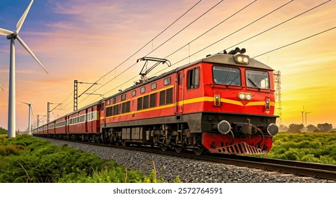

Reservation Information System
Learn more about our Railway Reservation Information System

Yasaswini Railway Reservation Information System is a B.Tech student project developed to provide railway reservation information through a simple and user-friendly website.
The system helps passengers easily access railway-related information such as available trains, registration, ticket booking and PNR status.
The main purpose of this project is to make railway reservation information easy to access and understand for passengers.
Our objective is to create a simple, convenient and organized railway reservation information system that provides useful information to passengers through a web-based interface.